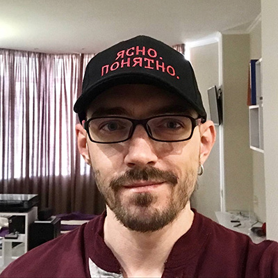
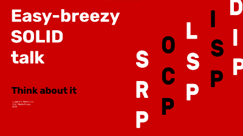

|
 Eugene Merkoulov Senior Backend Developer Contact me:Odesa, Ukraine +380632700628 eugenefromtheinternet@gmail.com @eugenex1LinksLinkedIn GitHub Stack Overflow Leetcode Personal blogKey skillsOOP NodeJS / TypeScript Software design Microservice architectures Automation Monitoring Fault tolerance TDD DDD RabbitMQ MongoDB MySQL Docker Some of my talks LanguagesEnglish Ukrainian Russian |
About meI design & program highly maintainable systems intended for scale and a long run. Big fan of standards, infrastructure & automation, testing & documentation, fault tolerance, monitoring & reporting My developer experience ranges from web stores & social networks to content management systems to advertisement platforms, then to video conferencing software. Used to be a CTO in startups, gathered & trained teams, worked on project architecture, development & management, but these days I prefer to stick closer to tech & code. Always ready to tackle hard problems, mentor junior staff & share experience. ExperienceSenior Backend DeveloperGlobal LedgerMARCH 2022 — NOVEMBER 2023 Odesa, remoteGlobal Ledger is a Swiss based blockchain analytics company providing real time AML compliance, transaction monitoring and investigation support for crypto businesses, financial institutions, regulators and law enforcement. I was part of the team working on funds tracing functionality.
Senior Backend DeveloperGuestyMARCH 2022 — DECEMBER 2023 Odesa, remoteGuesty is a property management software for short-term rentals. I was part of the team working on the internal Channel Manager product which maintains API connections to property management providers. Features implemented:
Senior Backend DeveloperNoosaAUGUST 2020 — MARCH 2022 Odesa, remoteNoosa is a credit as a service API based company; enabling brands and retailers to offer their own branded on-demand free credit services at the point of purchase. There I have:
Senior Backend DeveloperAller Media A/SJUNE 2013 — FEBRUARY 2020 Odesa, onsite Oslo, onsiteGood old PHP days. There I have worked on a some of internal & public Aller's products. DBTV.noDagbladet's own video streaming service. It has lived through three iterations, starting from Brightcove-hosted solution, then YouTube-backed one, and finally JW Player. I was responsible for most of the backend design, an analytics system & and took care of media migration when switching providers. LommelegenA healthcare consulting ыукмшсу which lets you to have a video call with a medical professional. Although a description "customers pick a specialist (or a medical field) and ask a health-related question" may sound dead simple, the presence of payment processing, authorization, sensitive data management, monitoring, reporting, notifications & integrations to few other company's systems made it quite a task to accomplish. SE.NOOnline TV programme for Norwegian TV. LabradorAller's internal content management system. PlussA flock of microservices implementing the company's premium subscription business and few other tasks. Consists of an OAuth service, a user session service & a subscription/payment service, everything made in Go. I was briefly involved in the latter one. TegneserieA simple system for management of comic strips. Includes bulk uploading of image files, automatic scheduling for publishing them online, backing up & sending to the print server so they eventually end up in print media.
CTOAdCenterNOVEMBER 2011 — JUNE 2013 Odesa, onsiteAn advertisement aggregator & control center. Allows customers to run campaigns in multiple social networks at the same time, offers a mature tool kit for managing ads in bulk, optimizes targeting & budgets for efficiency or economy, mitigates quirks & intricancies of underlying platforms and has lots of automation. There I have:
CTOClickkyAPRIL 2012 — MAY 2013 Odesa, onsiteA social media & performance marketing service which was serving up to 25M ad impressions daily. I joined the team as a backend developer and later was promoted to architect, and finally to CTO. There I have:
CTOHydra2010 Odesa, onsiteMy attempt at having my own startup company. Online video conferencing software based on the Red5 media server. It was made with PHP, Java (the RTMP server) & Flash/ActionScript (the client). It was used by few my clients and a government department. Freelancing2009 — 2011 Odesa, remoteMy early days of web development, when I singlehandedly have implemented few projects. LogomagA community of child's psychologists and speech therapists. Featured a forum, an online store, and a built-in online video conferencing solution. My first ever commercial project where I did full cycle of design, development and support. BioinstinctA wellness community, features a social network, blogging platform, online store and some unique social & informational functionality. Prima TelecomI developed an internet connection benchmarking software, similar to the one found at speedtest.net, for a VoIP company. Client app was written in ActionScript3, multithreaded server written in Python. |